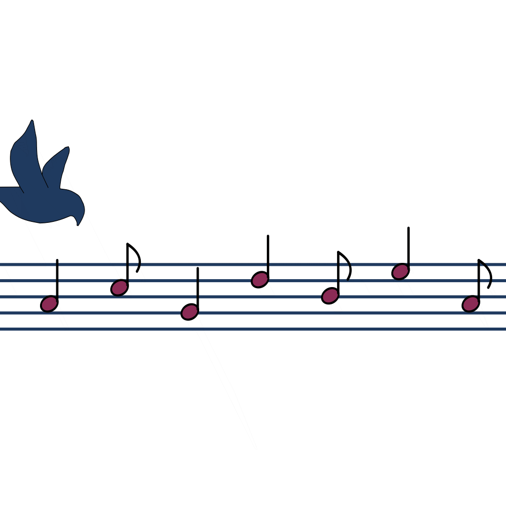
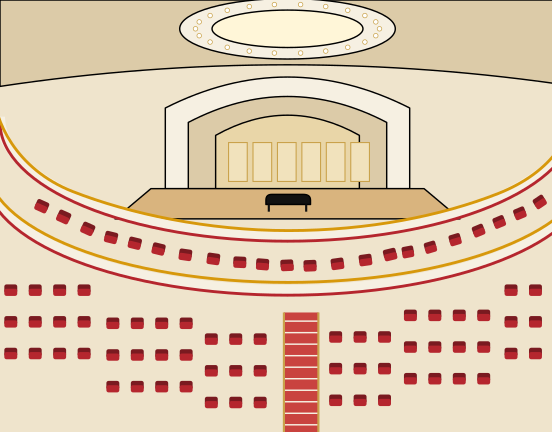

«Щедрик»
Чотири ноти, які впізнає весь світ. Історія про те, як подільська щедрівка перетворилася на один із найвідоміших різдвяних творів планети.
Пісня про ластівку
«Щедрик» – це народна щедрівка, яку в Україні здавна співали напередодні Старого Нового року, на Щедрий вечір. У ній ластівка прилітає до господаря і віщує йому багатий, щедрий рік, приплід у кошарі, достаток і щастя в родині.
Цікаво, що щедрівка походить із дохристиянських часів, коли новий рік в Україні зустрічали навесні – саме тоді, коли повертаються ластівки. Тому пташка в пісні – провісниця весни й нового життя.

Текст щедрівки
Щедрик, щедрик, щедрівочка,
Прилетіла ластівочка,
Стала собі щебетати,
Господаря викликати:
«Вийди, вийди, господарю,
Подивися на кошару,
Там овечки покотились,
А ягнички народились.
В тебе товар весь хороший,
Будеш мати мірку грошей,
Хоч не гроші, то полова:
В тебе жінка чорноброва».
Щедрик, щедрик, щедрівочка,
Прилетіла ластівочка.

Як народжувалася обробка
Леонтович записав мелодію щедрівки на Поділлі й вперше обробив її для хору на початку 1900-х років. Потім він кілька разів повертався до твору, вдосконалюючи його, остання редакція з'явилася у 1919 році.
Уся обробка побудована на короткому мотиві з чотирьох звуків, який повторюється безперервно, мов щебет ластівки чи передзвін. На цьому тлі інші голоси хору ведуть власні мелодії, створюючи відчуття руху й радісного очікування.
Уперше «Щедрик» публічно виконав хор Київського університету під керуванням Олександра Кошиця 26 грудня 1916 року.
Світове турне та Карнегі-хол
У 1919 році уряд Української Народної Республіки створив Українську республіканську капелу під керівництвом Олександра Кошиця. Хор вирушив у гастролі Європою, щоб розповісти світові про Україну мовою пісні. «Щедрик» звучав у Празі, Відні, Парижі, Берліні, Лондоні та багатьох інших містах.
5 жовтня 1922 року капела виконала «Щедрик» у знаменитій концертній залі Карнегі-хол у Нью-Йорку. Американська публіка була в захваті, і саме з цього концерту почалася світова історія твору.


«Carol of the Bells»
У 1936 році американський диригент українського походження Петро Вільховський написав до мелодії Леонтовича англійський текст. Повторюваний мотив з чотирьох нот нагадав йому дзвіночки, тому пісня отримала назву «Carol of the Bells» – «Колядка дзвонів».
Відтоді твір став невіддільною частиною різдвяних свят у всьому світі. Його виконують хори та оркестри, рок і поп гурти, він звучить у фільмах, мультфільмах і рекламі. Мільйони людей щороку чують «Щедрик», часто навіть не знаючи, що це українська народна пісня в обробці Миколи Леонтовича.
Англійський текст
Англійська версія Вільговського – не переклад, а зовсім нова поезія. У ній немає ластівки й господаря, натомість співається про срібні дзвони, що сповіщають про Різдво.
«Carol of the Bells» – Peter J. Wilhousky (1936)
Hark how the bells,
sweet silver bells,
all seem to say,
throw cares away
Christmas is here,
bringing good cheer,
to young and old,
meek and the bold,
Ding dong ding dong
that is their song
with joyful ring
all caroling
One seems to hear
words of good cheer
from everywhere
filling the air
Oh how they pound,
raising the sound,
o'er hill and dale,
telling their tale,
Gaily they ring
while people sing
songs of good cheer,
Christmas is here,
Merry, merry, merry, merry Christmas,
Merry, merry, merry, merry Christmas,
On on they send,
on without end,
their joyful tone
to every home
Ding dong ding… dong!
Послухайте «Щедрик»
Дві версії одного твору: оригінальна українська та англійська «Carol of the Bells».